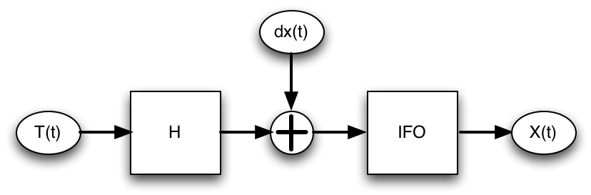

| LTPDA Toolbox™ | contents | |
In your data pack, you will find two raw data series. These are real measurements of a system that looks like
We have measured the two signals, T(t) and X(t). The displacement input to the interferometer, dx(t), is inaccessible to us, and is in fact the data we want to recover from the data analysis.
The interferometer data, X(t), is saved in the file ifo_temp_example/ifo_training.dat. This is a two-column ASCII file with the first column giving the time-stamps of the data and the second column the measured IFO output in radians.
To read in the data, we can use the AO constuctor, with the set of parameters "From ASCII File". The key parameters are:
| Key | Value | Description |
|---|---|---|
|
FILENAME |
'ifo_temp_example/ifo_training.dat' |
The name of the file to read the data from. |
|
TYPE |
'tsdata' |
Interpret the data in the file as time-series data. |
|
COLUMNS |
[1 2] |
Load the data x-y pairs from columns 1 (as x) and 2 (as y). |
|
XUNITS |
's' |
Set the units of the x-data to seconds (s). |
|
YUNITS |
'rad' |
Set the units of the y-data to radians (rad). |
|
ROBUST |
'no' |
Use fast data reading for this simple file format. |
|
DESCRIPTION |
'Interferometer data' |
Set some text to the 'description' field of the AO. |
Once we've loaded the data we can calibrate it to displacement using the following equation:
where lambda=1064nm.
To do the calibration, you can use the method ao/scale, specifying the factor and the yunits of the factor itself. Then save the resulting time-series to disk in ifo_temp_example/ifo_disp.xml.
The temperature data, T(t), is saved in the file ifo_temp_example/temp_training.dat. Again, this is a two-column ASCII file; the first column contains the time-stamps of the data, the second column contains the temperature values in degrees Celsius.
To read in the data, we can use the AO constuctor, with the set of parameters "From ASCII File". The key parameters are:
| Key | Value | Description |
|---|---|---|
|
FILENAME |
'ifo_temp_example/temp_training.dat' |
The name of the file to read the data from. |
|
TYPE |
'tsdata' |
Interpret the data in the file as time-series data. |
|
COLUMNS |
[1 2] |
Load the data x-y pairs from columns 1 (as x) and 2 (as y). |
|
XUNITS |
's' |
Set the units of the x-data to seconds (s). |
|
YUNITS |
'degC' |
Set the units of the y-data to degrees Celsius. |
|
ROBUST |
'no' |
Use fast data reading for this simple file format. |
|
DESCRIPTION |
'Temperature data' |
Set some text to the 'description' field of the AO. |
Having loaded the temperature data, we can proceed to calibrate it to Kelvin by adding
273.15 to the data and then change the y-units. You can do this using the two AO methods:
The final step is to save this calibrated temperature data to disk as an AO XML file called ifo_temp_example/temp_kelvin.xml, ready for input to the next topic.
To plot the data with hours on the x-axis instead of seconds, use the iplot parameter XUNITS.
For example:
iplot(a, plist('XUNITS', 'h'))
|
| |
Writing LTPDA scripts | Topic 2 - Pre-processing of data | |
©LTP Team